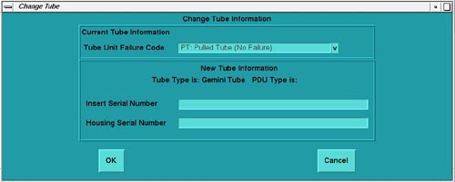

Operating Documentation
Direction 5114043-800, Rev# 9
LightSpeed 3.X Service Methods (Advanced)
Operating Documentation |
New Tube prepares the system to store tube usage statistics, for trend analysis and tube warranty purposes.
Before beginning this procedure, please read the safety information in Equipment Service - Gantry.
Select [REPLACEMENT] .
Select [CHANGETUBE] <.>
Refer to the list in Table 1, and type/enter the failure code for the defective tube in the “Tube Unit Failure Code” field on the screen.
failcode<ENTER>
Refer to the Tube Housing; type/enter the new Tube’s Insert Serial Number in the appropriate field on the screen.
Insert Serial Number
Refer to the Tube Housing; type/enter the new Tube’s Housing Serial Number in the appropriate field on the screen.
Housing Serial Number
Click [OK] to accept these changes. (Refer to Illustration 1.)
Table 1: Tube Failure Codes
| FAILURE CODE | FAILURE CODE |
|---|---|
| AI: Image Artifact | OH: Other-Housing Related |
| BG: Broken Glass | OL: Generator Overload |
| CA: Casing Arcing | OR: Other-Rotor Related |
| CB: Casing Bubbles/Particles Seen | PF: Overheat/Pump Failure |
| CL: Casing Oil Leak | PT: Pulled Tube (No Failure) |
| GS: Grid Short | RF: Frozen Rotor |
| OC: Other-Cathode Related | RN: Noisy Rotor |
| OE: Tube Loss Due to Failure Elsewhere | SD: Shipping Damage/Error |
| OF: Open Filament | SS: Stator Open/Stator Short |
| OG: Arcing | XL: Low X-Ray Output |
Illustration 1: Change Tube Screen
